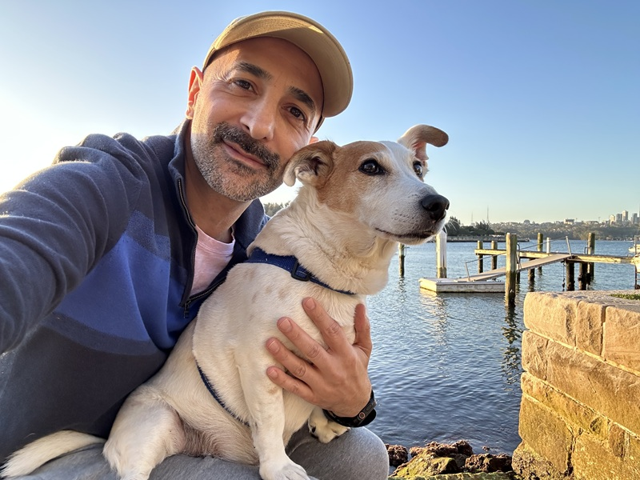
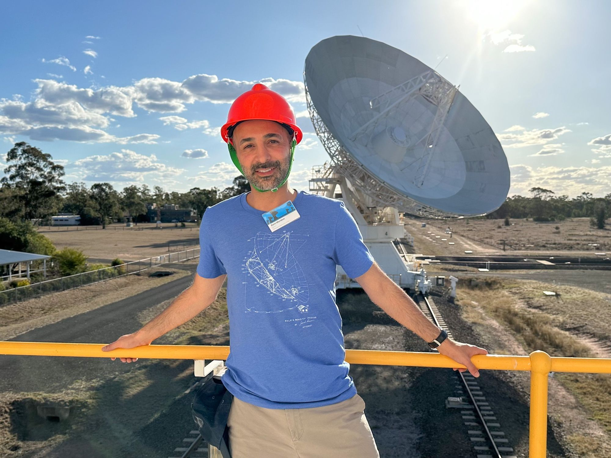
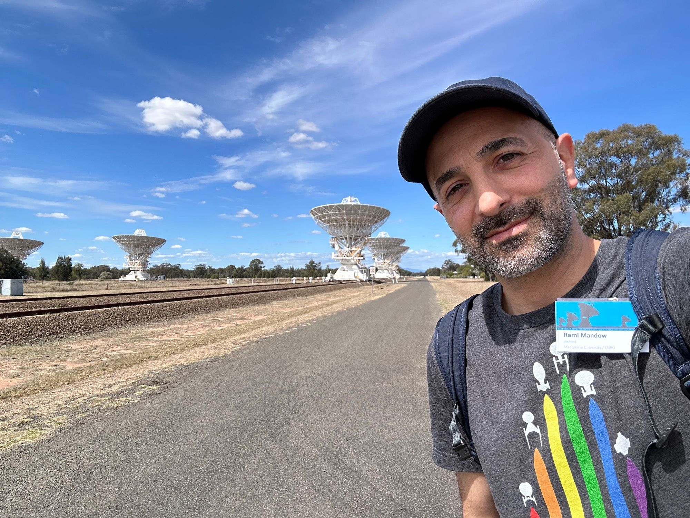

01
Pulse-profile variability
Understanding how pulsar profiles and emissions change over time.
Astronomy, research and the communities that make science possible.
I am a PhD candidate in pulsar astronomy at Macquarie University and CSIRO, Australia's national science agency. My professional background extends beyond academia, spanning finance, government, the not-for-profit sector, self-employment, and digital media, across a range of roles, including leadership positions. I am also the founder of SpaceAustralia.com, an independent astronomy and space science media platform. Outside of research, my passions include astronomy, astrophotography, science communication, mountain hiking, and spending time with my dog, Max.

My research focuses on understanding variations in stable pulse profiles, pulsar emission processes and the neutron star magnetospheric environments that produce them, the propagation and polarisation of radio waves, and implications of pulse profile variability on precision timing experiments. My broader research interests extend into time-domain astrophysics, including long-period transients, fast radio bursts (FRBs) and gravitational waves.
Understanding how pulsar profiles and emissions change over time.
Investigating the polarised signatures of magnetospheric behaviour.
Exploring the effects of profile variability on pulsar timing.

I truly believe that our best science thrives when our communities are collaborative and inclusive. As such, I am actively involved and lead many scientific community initiatives, including serving as a board member of Queers in Science Australia, founding the International Pulsar Timing Array (IPTA) Pulse Profile Variability working group, and chairing the IPTA Diversity, Equity and Inclusion (DEI) Committee.
